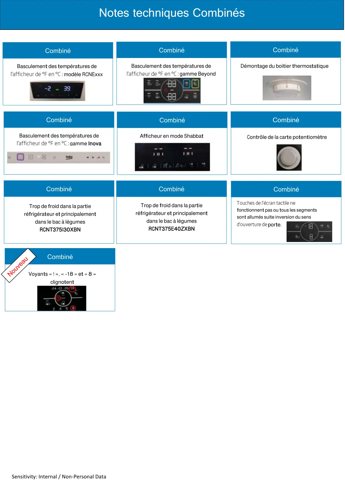

Infos techniques combinés

Sensitivity: Internal / Non-Personal DataNotes techniques CombinésCombinéCombinéCombinéCombinéCombinéCombinéCombinéBasculement des températures de: modèle RCNExxxBasculement des températures de: gamme BeyondDémontage du boitier thermostatiqueBasculement des températures de: gamme InovaContrôle de la carte potentiomètreAfficheur en mode ShabbatTrop de froid dans la partieréfrigérateur et principalementdans le bac à légumesRCNT375I30XBNTrop de froid dans la partieréfrigérateur et principalementdans le bac à légumesRCNT375E40ZXBNCombinéfonctionnent pas ou tous les segmentssont allumés suite inversion du sensporte.Voyants « ! », « -18 » et « 8 »clignotentCombiné
1 / 1Liens de ce document (12)
PDFNote informations table vitro céramique surchauffe pendant fonctionnement1 p.PDFNote d'information mauvaise fermeture de porte four Leisure1 p.PDFAfficheur REF en mode shabbat1 p.PDFBasculement °F en °C electronique Inova1 p.PDFContrôle potentionmetre1 p.PDFRCNT375I30XBN Trop de froid dans la partie REF Note Technique1 p.PDFRéglage °F en °C1 p.PDFBasculement °F en °C electronique Beyond1 p.PDFRCNT375E40ZXBN Trop de froid dans la partie REF Note Technique1 p.PDFDémontage boitier thermostat plafonnier REF2 p.PDFNote d information touches de l'écran tactile ne fonctionnent pas1 p.PDFNote Technique Froid Voyants -18 8 et ! clignotent2 p.